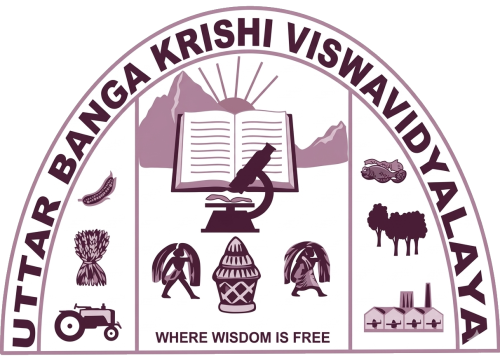
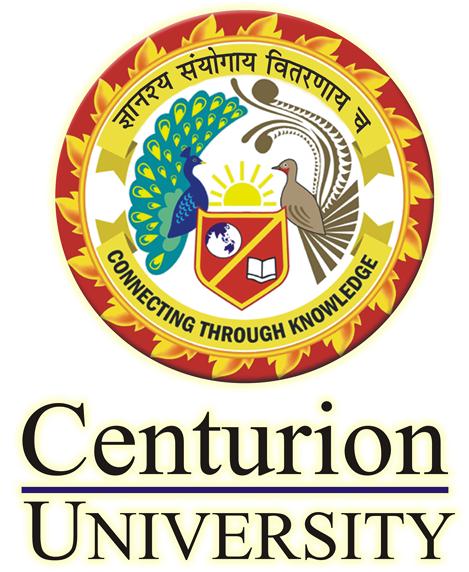

Education
Ph.D. Entomology
Mississippi State University, USA
Jan 2025 – Present

M.Sc. (Ag) Entomology
Uttar Banga Krishi Vishwavidyalaya, West Bengal, India
2020 – 2022

B.Sc. Agriculture
Centurion University, Odisha, India
2016 – 2020